REVENGE MEMORIES / CHAPTER FIVE / 2026.10.23
第五章 · 六处据点完整前后对照
0.10.15-environment同一真实战后记录分别使用本轮开始时和当前渲染器捕获。室外照护院、桥头营地与前庭保持外部建筑；修复间、东门廊与记录室明确改为去顶室内。
H51
内廷照护处是病房门外的室外交接院；保留完整医舍外观，地面改露天砌石与草园边缘，室内病床在M51剖面表达。
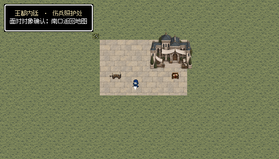
H52
登天桥西门营地是露天石质落脚平台，门楼外观与园林边缘保留，去除室内感浅色抹灰地。
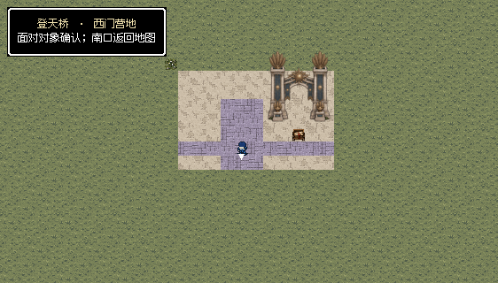
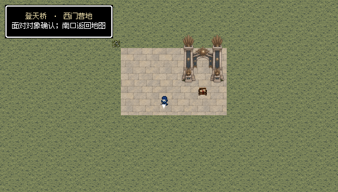
H53
祭所底层修复间统一去顶室内磨损石板和连续石墙；装置保留，室内草地与花丛改为石地及同占地储料箱。
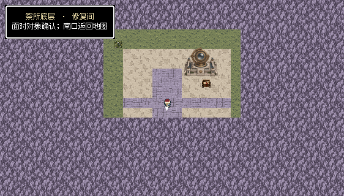
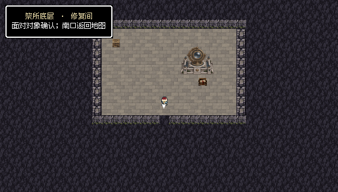
H54
日宫下层东门廊是室内大理石地与连续石墙；不铺草地，不摆露天花丛。装置、对象与南侧出口保持。
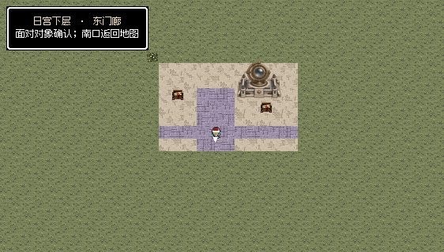
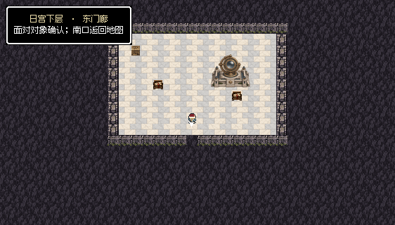
H55
两军整备位于神宫前庭的露天石庭，门楼与草园边缘符合外部空间，原对象、名单与救治位置保持。
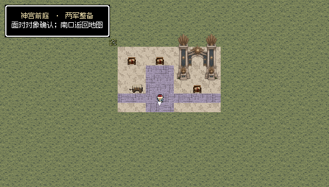
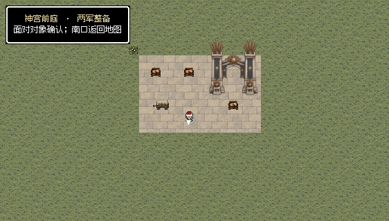
H56
旧书库记录室统一去顶室内，木地储藏区与石质通廊分开；完整屋顶书库改同96×96占地的书架库位，不在室内再放房屋。
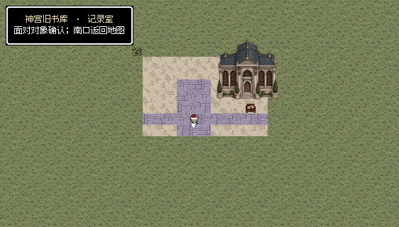
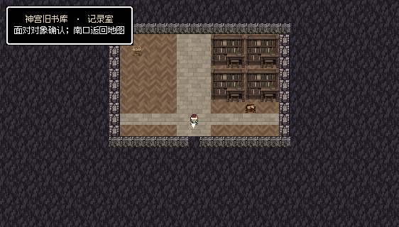
记录室书架库位由四个既有48×48完整模块组成，保留原96×96阻挡占地与南侧记录交接位置；原透明像素按无损导入核对。三处室内边界墙在原行走范围之外，南口保持打开。六据点11处可见交互、100次普通按键及799项显示范围检查通过。